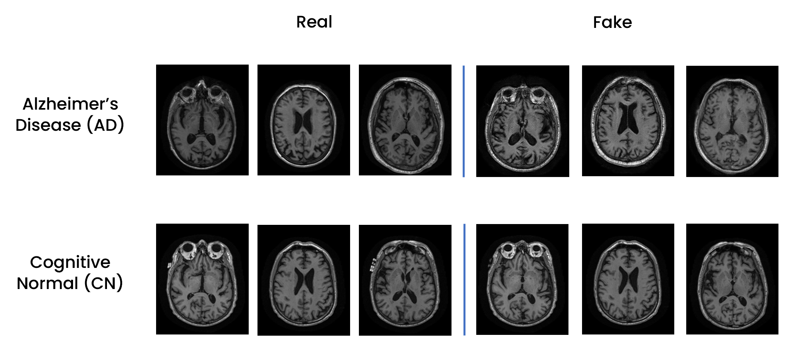
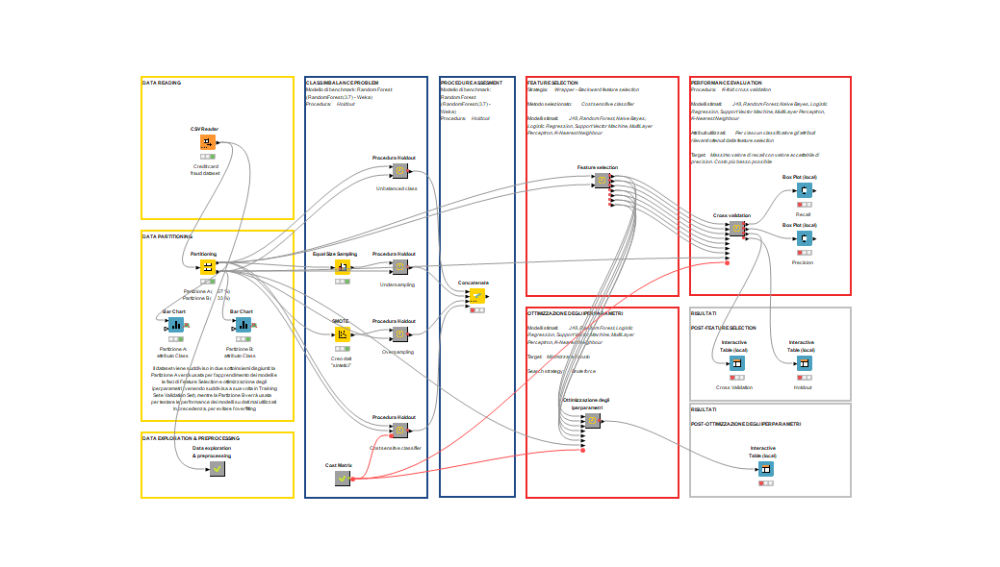
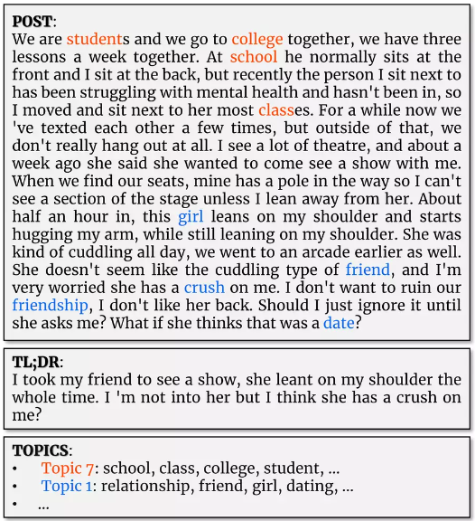
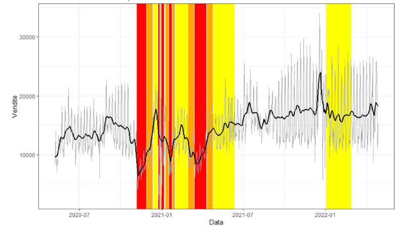

Portfolio
Deep Learning
Video Classification: Human Action Recognition on HMDB-51 dataset


Two-stream CNNs for video action recognition using Stacked Optical Flow, implemented in Keras, on HMDB-51 dataset.
We use spatial (ResNet-50 finetuned) and temporal stream cnn (stacked Optical Flows) under the Keras framework to perform Video-Based Human Action Recognition on HMDB-51 dataset.

CXR-ACGAN: Auxiliary Classifier GAN for Chest X-Ray Images Generation
CXR-ACGAN: Auxiliary Classifier GAN (AC-GAN) for Chest X-Ray (CXR) Images Generation (Pneumonia, COVID-19 and healthy patients) for the purpose of data augmentation. Implemented in TensorFlow, trained on COVIDx CXR-3 dataset.
The main objective was to train an Auxiliary Classifier GAN (AC-GAN) to obtain a model for the conditional synthesis of chest radiographs of healthy patients, patients with COVID-19 and patients with non-COVID-19 pneumonia. Additionally, we used the trained GAN to perform data augmentation on the unbalanced COVIDx dataset, generatively balancing minority classes, and possibly improving the performance of some classifiers.

Alzheimers's Disease / Healthy Brain MRI Images Classification and WGAN Generation
Brain T1-Weighted MRI Images Classification and WGAN Generation (Alzheimer's and Healthy patients) for the purpose of data augmentation. Implemented in TensorFlow, trained on ADNI dataset.
This project focused on Alzheimer's Disease through three main objectives. Firstly, a dataset of axial 2D slices was created from 3D T1-weighted MRI brain images, integrating clinical, genetic, and biological sample data. Secondly, a Custom Resnet-18 was trained to classify these images, distinguishing between healthy individuals and those with Alzheimer's. Lastly, different techniques for managing class imbalance were evaluated to improve the classifier's performance and reduce bias, including the training of a generative model (Wasserstein GAN) on Alzheimer's Disease and Healthy images for the purpose of generative data augmentation.

Machine Learning
Credit Card Transactions Fraud Detection using KNIME.


The project consists in the application of different classification models to a dataset containing data relating to credit card transactions for the detection of financial fraud.
One of the most critical processes in finance is the detection of fraudulent credit card transactions. It is possible to detect these frauds with different machine learning algorithms, but what is the most effective classifier to accomplish this task?
In the first part of the project, we compared different techniques to counter the presence of unbalanced classes within the dataset. Then we compared the performance of some of the most widely used classification algorithms in this area. To determine the best method, we did not limit ourselves to the usual metrics but also took into account the costs to the financial institution related to any errors the model may make, a key aspect in this area.

Bachelor's Thesis: "Cluster Analysis on the Results of Molecular Simulation of the Water Adsorption Process on Atmospheric Particulate Models"
and Published Paper: "Theoretical Investigation of Inorganic Particulate Matter: The Case of Water Adsorption on a NaCl Particle Model Studied Using Grand Canonical Monte Carlo Simulations"


During a
research internship at the
Computational Physical Chemistry Laboratory at the
University of Milano-Bicocca i took part in a research project concerning the study, by means of
Monte Carlo computational simulations in the Grand Canonical ensemble, of the
adsorption process of
water on model
surfaces of sodium chloride (NaCl) atmospheric particulate matter of marine origin.
My work involved performing a data analysis, and in particular a
cluster analysis and
orientational analysis, on the results of the 3-D molecular mechanics simulations, leveraging
unsupervised machine learning (
DBSCAN) for water
clusters detection.
I developed a script in Python language (NumPy, pandas, scikit-learn), capable of performing an automated (frame-by-frame)
data analysis of the configurations (atomic coordinates of water molecules) generated during each simulation, conducted at a specific H2O pressure value.
The results of the analysis provided a
molecular-level understanding of the
aggregative phenomena that characterise the adsorption process of water vapor on the NaCl surface. In particular, the script allows to: identify the number of clusters present in the system, classify them into 'islands' or 'layers' according to their shape and size, and study the orientation of water molecules moving away from the NaCl surface.
The results of my study are collected in my
Bachelor's thesis:
"Cluster Analysis on the Results of Molecular Simulation of the Water Adsorption Process on Atmospheric Particulate Models."
Furthermore, during the course of the year 2023, I subsequently contributed, in the context of a voluntary collaboration with the corresponding authors' research groups, to the development of a
paper entitled:
"Theoretical Investigation of Inorganic Particulate Matter: The Case of Water Adsorption on a NaCl Particle Model Studied Using Grand Canonical Monte Carlo Simulations." (
F. Rizza,
A. Rovaletti,
G. Carbone, T. Miyake,
C. Greco, U. Cosentino), published on the international, peer-reviews and open access
Inorganics journal by
MDPI. In particular, I was involved in the investigation, formal analysis and data curation phases.

Natural Language Processing
Word Embedding (Word2Vec and CADE): the evolution of tópoi in the Italian literary tradition
Using distibuctional semantics (word2vec family algorithms and the CADE framework) to learn word embeddings from the Italian literary corpuses we generated.
The goals of our project were:
1. to obtain corpora that were consistent with our research questions from a collection of texts obtained from two main sources
2. to use distibutional semantics, and in particular algorithms from the word2vec family, along with the CADE framework, in order to learn word embeddings from the generated and processed corpora
3. and finally to analyze some particularly long-lived tòpos, chosen arbitrarily, to be able to answer some research questions

Extreme Text Summarization and Topic Modeling over Reddit Posts
Extreme Extractive Text Summarization and Topic Modeling (using LSA and LDA techniques) over Reddit Posts from TLDRHQ dataset.
TL;DR, which is an acronym for ”Too Long; Didn’t Read” and is an extremely short summary of the post’s content that is good practice for Reddit users to leave at the end of a post. A system, such as a bot, capable to automatically generate the TL;DR of a post could improve Reddit usability. This project develops a supervised extractive summarization model to obtain TL;DR-like summaries, and uses LSA and LDA techniques for topic modeling analysis to identify hidden topics in posts

Time Series and Streaming Data
Electricity Consumption Forecasting Using Arima, UCM, Machine Learning (Random Forest and k-NN), and Deep Learning (GRU Recurrent Neural Network) Models

The forecasting of time series of electricity consumption plays an important role in efficient resource management and strategic planning in the energy sector. In this project, we analyse a univariate, homogeneous, high-frequency time series of electricity consumption measured every 10 minutes from 01/01/2017 to 30/11/2017, comparing statistical (ARIMA and UCM), Machine Learning (Random Forest and k-NN) and Deep Learning (GRU Recurrent Neural Network) approaches to model the time series and forecast consumption for the month of December 2017. The best performing of the models in each family, trained on data sampled between 01/01/2017 to 31/10/2017 (or a portion thereof) and validated on November 2017 data, resulted in the following error measures: MAE(ARIMA)=1010.08, MAE(UCM)=1183.40 and MAE(ML)= 1184.07, leading the ARIMA approach to be the most accurate in forecasting among those tested.
 Forecasts for the validation set (November 2017) made with the best models for each class.
Forecasts for the validation set (November 2017) made with the best models for each class.
Restaurant's Revenue Loss during first COVID-19 pandemic lockdown
Time Series Analysis and Forecasting (using ARIMA , UCM and Random Forest models) of a restaurant's revenue during the first lockdown of the COVID-19 pandemic in Italy, to estimate the loss incurred..
In this project we analyze the sales performance of six restaurants in Lombardy and Emilia-Romagna from 2018 to 2022. The study aims to identify patterns in the time series, estimate losses during the COVID-19 pandemic, and predict future restaurant trends, uses different models, including ARIMA and SARIMA, UCM, and Random Forest.

Data Visualization
Air Quality Evolution in the Milan agglomeration: Data Analysis & Interactive Visualization

Has air quality improved over the past 15 years in and around Milan? Is the concentration of pollutants higher in winter or summer? and why? What are the main pollutants, and what meteorological and anthropogenic factors influence the seasonal pattern of their concentrations?
We tried to answer these, and other, questions by analyzing data from ARPA Lombardy. The results of our analysis were then displayed in an interactive infographic created using the Tableau platform.

Infographics: PROM score and the possible relationship with weather conditions
PROMs are patient-reported outcome measures following an operation or health treatment, often used to assess the quality of health care.
We evaluated, through some infographics made through Python, using the matplotlib and Seaborn libraries, the possible presence of a relationship between the outcomes of mental and physical health status assessments of a sample of patients, following surgery, and the weather conditions (light, humidity and temperature) relative to the time of questionnaire completion.

Data Management
Data Acquisition and Modeling: Competitive Pokémon Graph Database


Data Acquisition and Modeling: Graph database containing information related to competitive Pokémon videogames, scraped from various sources
The idea behind the project is to create a graph database containing information related to the competitive Pokémon videogame, with particular reference to the Video Game Championship Series 12 rules, the official format in effect for official tournaments and events during the period February - August 2022 and valid for the Pokémon World Championship in London in August 2022. The goal is to obtain a useful tool as a support for competitive play, both for novice and experienced players. The different Pokémon are placed in relation to the teammates, moves, tools and the basic statistics with which they are most frequently matched within teams in competitive matches. For this reason, the choice on the type of database to be implemented fell on a graph database, implemented through Neo4J. The choice of the graph database allowed us to take advantage of its characteristic of being schema less, which allows us to create nodes, to model the different entities, and arcs, to model the various relationships, without following a predefined schema. The database was populated through data obtained through API and Web Scraping, appropriately integrated and processed.

© 2022 Carbone Giorgio. Powered by Jekyll and the Minimal Theme.